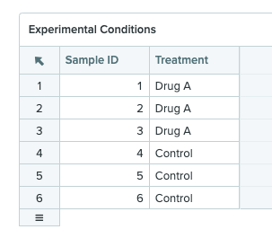

Benchling R&D Cloud is a laboratory information management system with a developer platform consisting of a Postgres database, an application programming interface (API), an “Events” system that is built on top of the AWS EventBridge service, as well as a Python software development kit (SDK). benchlingr is an unofficial R package that aims to make the Benchling developer platform accessible to data scientists using R.
Installation
Install the benchlingr package from GitHub using the remotes package.
remotes::install_github("hemoshear/benchlingr", ref='main', auth_token={{secret.AUTH_TOKEN_GITHUB}})The benchlingr package also requires Python. We recommend using the Anaconda distribution
Configuration
The benchlingr package primarily utilizes the RESTFUL API service and Postgres database components of the Benchling developer platform. In order to use these components of the Benchling platform, one must acquire API keys and database credentials through the Benchling interface. This section will focus on how to make these credentials available to the benchlingr package.
API
In order to access the Benchling API service on one’s Benchling tenant, one must obtain an API key through the Benchling interface. Follow the instructions in the official documentation to obtain an API key. After obtaining an API key, it is recommended that you define a variable in .Renviron called BENCHLING_API_KEY to make this key accessible to the benchlingr package with the default function arguments.
# ~/.Renviron
# Benchling API key
BENCHLING_API_KEY=xxxxxxxxxxxData warehouse
Follow the instructions in the official documentation to obtain a username and password for the data warehouse for your Benchling tenant. After obtaining a username and password, it is recommended that one define a variable in .Renviron called BENCHLING_WAREHOUSE_KEY and BENCHLING_WAREHOUSE_PASSWORD to make the credentials available to benchlingr with the default function arguments.
# ~/.Renviron
# Benchling API key
BENCHLING_API_KEY=xxxxxxxxxxx
# Benchling warehouse credentials
BENCHLING_WAREHOUSE_USERNAME=yyyyyyyyyyy
BENCHLING_WAREHOUSE_PASSWORD=xxxxxxxxxxxPython SDK
The benchlingr R package uses the official Benchling Python SDK to access the Benchling API service. The Python dependencies will be installed automatically into a miniconda environment. One can also create new conda or virtualenv environments with the config_sdk_env helper function, which simply creates an environment and installs the benchling-sdk package in it.
See the official Anaconda documentation for instructions on how to install Anaconda on your machine.
Fundamentals of the Benchling Data Warehouse
The Benchling data warehouse is a read-only, Postgres database that can be used to easily extract data pertaining to items such as the inventory, entities, results, and noteboook entries using SQL queries. Before moving on, we recommend that the user reads the official Benchling documentation for the data warehouse. The rest of this section will assume the user has a basic understanding of Benchling’s data warehouse, as we will discuss practical considerations of working with the database, including how to use benchlingr tools to streamline your interactions with the database.
To connect to the data warehouse on your tenant with the benchlingr package, use the warehouse_connect function. By default, the function looks for two environment variables in .Renviron: BENCHLING_WAREHOUSE_USERNAME and BENCHLING_WAREHOUSE_PASSWORD. If this function is not working for you, please see the instructions for configuration in the official documentation. Once you are able to connect to the database using the instructions in the official tutorial, the warehouse_connect function should work properly, assuming that the aforementioned environment variables are set.
conn <- warehouse_connect(tenant = "hemoshear-dev",
username = Sys.getenv("BENCHLING_DEV_WAREHOUSE_USERNAME"),
password = Sys.getenv("BENCHLING_DEV_WAREHOUSE_PASSWORD"))
class(conn)
#> [1] "PqConnection"
#> attr(,"package")
#> [1] "RPostgres"The warehouse_connect function will return a Postgres SQL database connection object (PqConnection), which can be used to make queries against the database using the DBI package in R. To verify that you are connected to the database for your Benchling tenant, one can use the dbIsValid to display information about the connection itself.
DBI::dbIsValid(conn)
#> [1] TRUEThe DBI::dbDisconnect function closes the warehouse connection.
DBI::dbDisconnect(conn)“Raw” tables and Postgres views
One can use the DBI::dbListTables function to see all the tables in the database. You’ll notice that every “table” in the database is actually comprised of two tables: an unedited version of the data, referred to as the “raw” table, and a cleaned up Postgres view of the data. For example, the analyte table is the Postgres view for a custom entity schema we defined, and the analyte$raw table is unedited table.
conn <- warehouse_connect(tenant = "hemoshear-dev",
username = Sys.getenv("BENCHLING_DEV_WAREHOUSE_USERNAME"),
password = Sys.getenv("BENCHLING_DEV_WAREHOUSE_PASSWORD"))
DBI::dbListTables(conn)[1:6]
#> [1] "analyte" "analyte$raw"
#> [3] "assay_result_schema" "assay_result_schema$raw"
#> [5] "author" "author$raw"In general, the Postgres views are more convenient to work with, since the raw tables contain many Benchling identifiers intended for internal use. In our experience, however, there are some use cases where the raw tables should be accessed instead of the Postgres views. For example, when one needs to extract assay results submitted in notebook entries that have not been approved, one will need to use the “raw” tables to do so, since the Postgres views will not contain assay results from unreviewed notebooks. Refer to the official Benchling documentation for more information about the differences between the raw tables and the Postgres views.
Retrieving data from the warehouse
To retrieve data from a table in the data warehouse, one can use the DBI::dbGetQuery function. The data warehouse consists of several types of tables, each with a different set of base columns.
For example, here is the code one would use to retrieve all the notebook entries from the data warehouse. Take a moment to look at the results of this query, as well as the descriptions of the columns in the official Benchling documentation. The
DBI::dbGetQuery(conn, "SELECT * FROM entry") %>%
tail()
#> id source_id archived$ archive_purpose$ creator_id
#> 1 etr_f1bpDIes src_ZRvTYOgM FALSE <NA> ent_Ec76qX9f
#> 2 etr_T3WZTyAe src_ZRvTYOgM FALSE <NA> ent_Ec76qX9f
#> 3 etr_JYUlMiIs src_ZRvTYOgM FALSE <NA> ent_Ec76qX9f
#> 4 etr_lnZDpRVI src_ZRvTYOgM FALSE <NA> ent_Ec76qX9f
#> 5 etr_MWQ7M7Pz src_ZRvTYOgM FALSE <NA> ent_Ec76qX9f
#> created_at modified_at name display_id
#> 1 2022-09-16 15:56:02 2022-09-19 12:52:28 read_plate_diagrams EXP22000001
#> 2 2022-09-16 19:16:42 2022-09-19 12:55:27 read_entry_tables EXP22000002
#> 3 2022-09-20 14:03:59 2022-09-20 18:26:58 download_blobs EXP22000004
#> 4 2022-09-22 14:55:52 2022-09-22 14:57:04 get_entity_table EXP22000005
#> 5 2022-09-20 13:01:10 2022-09-23 14:47:27 expand_multiselect_column EXP22000003
#> folder_id workflow_id schema_id entry_template_id review_status
#> 1 lib_F5H5Syfw <NA> <NA> <NA> <NA>
#> 2 lib_F5H5Syfw <NA> <NA> <NA> <NA>
#> 3 lib_F5H5Syfw <NA> <NA> <NA> <NA>
#> 4 lib_F5H5Syfw <NA> <NA> <NA> <NA>
#> 5 lib_F5H5Syfw <NA> <NA> <NA> <NA>
#> review_requested_at review_status_changed_at review_lifecycle
#> 1 <NA> <NA> <NA>
#> 2 <NA> <NA> <NA>
#> 3 <NA> <NA> <NA>
#> 4 <NA> <NA> <NA>
#> 5 <NA> <NA> <NA>
#> review_lifecycle_type
#> 1 <NA>
#> 2 <NA>
#> 3 <NA>
#> 4 <NA>
#> 5 <NA>
#> url
#> 1 https://hemoshear-dev.benchling.com/hemoshear_therapeutics_org/f/lib_F5H5Syfw-benchlingr-development/etr_f1bpDIes-read_plate_diagrams/edit
#> 2 https://hemoshear-dev.benchling.com/hemoshear_therapeutics_org/f/lib_F5H5Syfw-benchlingr-development/etr_T3WZTyAe-read_entry_tables/edit
#> 3 https://hemoshear-dev.benchling.com/hemoshear_therapeutics_org/f/lib_F5H5Syfw-benchlingr-development/etr_JYUlMiIs-download_blobs/edit
#> 4 https://hemoshear-dev.benchling.com/hemoshear_therapeutics_org/f/lib_F5H5Syfw-benchlingr-development/etr_lnZDpRVI-get_entity_table/edit
#> 5 https://hemoshear-dev.benchling.com/hemoshear_therapeutics_org/f/lib_F5H5Syfw-benchlingr-development/etr_MWQ7M7Pz-expand_multiselect_column/editCustom entities
The data warehouse for your tenant will come pre-loaded with tables relevant to any entity schemas that are universal to the Benchling system. For example, the entry schema is available on every Benchling installation with ELN functionality. Other tables are created when new schemas are defined in Benchling. When a custom entity or result schema is defined, Benchling creates a new set of tables in the database: one for the Postgres view and one for the raw data. For example, we defined a custom entity schema for representing analytes.

When we defined the “Analyte” custom entity schema, Benchling created a table in the data warehouse called analyte. All the analyte entities we created can be retrieved with DBI::dbGetQuery.
DBI::dbGetQuery(conn, "SELECT schema,id,name$,precursor_ion_mz,product_ion_mz FROM analyte") %>%
head()
#> schema id name$ precursor_ion_mz product_ion_mz
#> 1 analyte bfi_9fKcrORv 12C-Methylmalonic Acid 117.0 73.1
#> 2 analyte bfi_KsLU5uWV 12C-Uric Acid 166.9 123.9
#> 3 analyte bfi_VVamxrKQ 13C-Methylmalonic Acid 121.3 76.4
#> 4 analyte bfi_Q13AlXkf 13C-Uric Acid 171.0 126.0Benchling also created a “raw” table for our custom analyte schema.
DBI::dbGetQuery(conn, "SELECT id,schema,precursor_ion_m_z,product_ion_m_z,assay FROM analyte$raw") %>%
head()schema, id, and name$ are important fields present in every entity warehouse table. The schema field is the system name of the schema, which is necessary for some of the critical functionality in benchlingr. The id field is the Benchling identifier for the entity. The identifier for a custom entity will always start with bfi_, but other built-in Benchling entities will have specific prefixes in their identifiers. For example, container is a built-in Benchling entity schema and the identifiers for containers start with con_. Finally, name$ is the name for the entity. Typically the name is human-friendly, but there are several ways an entity can be named depending on how the schema is configured.
In addition to schema, id, and name$, there are many other columns present in every entity table. Read more about the other columns in the Benchling documentation.
Finally, the warehouse table for a custom entity will contain a column for every user-defined field in the entity. In our “analyte” example, each analyte entity can have a precursor ion m/z and a product ion m/z, which are representing as floats or “decimals” using the Benchling terminology.
Results
Similar to entities, every results schema in Benchling is represented as a table in the data warehouse. There are several differences between representations of results and entities worth mentioning.
First, results do not have names, but entities do. Second, both results and entities have identifiers, but entity identifiers tend to be more useful, since many operations involve finding results through entities linked to them, and not necessarily finding results directly via the identifier.
Third, when entities are registered, they become available in the Postgres view in the data warehouse shortly after (Benchling always has a short delay for data to be exported to the warehouse). When results are submitted, they are not available in the Postgres view in the data warehouse, but they are available in the “raw” table. Results only become available in the Postgres view after the notebook entry is reviewed. For that reason, the “raw” tables for results typically need to be accessed more frequently than the “raw” tables for entities, especially if notebook entries are not always being reviewed before the data contained within must be accessed.
Finally, results are linked to particular notebook entries in the data warehouse, but entities are not. In other words, a warehouse table for a results schema will have a column for a notebook entry identifier, but an entity table will not have a column for notebook entry identifier.
Shown below is a screenshot of a results table in a notebook entry with a schema called “Simple Plate Analyte Mapping”. This is a result schema with two fields: “Plate” and “Analytes”. The “Plate” field is an integer type that serves as a loose identifier for an assay plate, and the “Analytes” field is a custom entity type “Analyte” that we discussed in the previous section. The “Analytes” field can also take on multiple values.

Example of a results table in a notebook with two fields: “Plate” and “Analytes”. The “Plate” field is an integer type and the “Analytes” field is a custom entity type called “Analyte” and multiple values are enabled. plate 1 corresponds to the Methylmalonic Acid isotopes and plate 2 corresponds to the Uric Acid isotopes.
To extract this data from the warehouse, use the DBI::dbGetQuery function. In this case, I use the identifier for the notebook entry to extract all results of the simple_plate_analyte_mapping schema. I’m looking in the “raw” table because the notebook entry with this table has not been reviewed yet.
DBI::dbGetQuery(conn, "SELECT * FROM simple_plate_analyte_mapping$raw WHERE entry_id$ = 'etr_MWQ7M7Pz'")
#> id _pkey
#> 1 b30e02a0-6084-419d-a552-d6419aa564e0 31a79378-e82e-4a25-837d-65f4619770c9
#> 2 48d937f3-4035-494d-b63a-b658c91aadbd ad4344c3-4b58-476f-9fc2-caf043bec69a
#> _sync_key source_id schema
#> 1 assay_result_22897 src_ZRvTYOgM simple_plate_analyte_mapping
#> 2 assay_result_22898 src_ZRvTYOgM simple_plate_analyte_mapping
#> created_at$ creator_id$ entry_id$ archived$ archive_purpose$
#> 1 2022-09-20 13:08:21 ent_Ec76qX9f etr_MWQ7M7Pz FALSE <NA>
#> 2 2022-09-20 13:08:21 ent_Ec76qX9f etr_MWQ7M7Pz FALSE <NA>
#> custom$ validation_status$ validation_comment$ run_id$
#> 1 {} VALID <NA> <NA>
#> 2 {} VALID <NA> <NA>
#> field_validation$
#> 1 {"file": {"validation_status": "VALID", "validation_comment": null}, "plate": {"validation_status": "VALID", "validation_comment": null}, "analytes": {"validation_status": "VALID", "validation_comment": null}}
#> 2 {"file": {"validation_status": "VALID", "validation_comment": null}, "plate": {"validation_status": "VALID", "validation_comment": null}, "analytes": {"validation_status": "VALID", "validation_comment": null}}
#> plate analytes file
#> 1 1 ["bfi_9fKcrORv", "bfi_VVamxrKQ"] <NA>
#> 2 2 ["bfi_KsLU5uWV", "bfi_Q13AlXkf"] <NA>Many of the columns in the “raw” tables should not be used in any context, such as _pkey and _sync_key, because they are internal identifiers for Benchling. It is important to also extract the $archived$ column to see whether or not results are archived, as well as the schema column so that you may use benchlingr tools to pull information about entity fields in the results.
df <- DBI::dbGetQuery(conn, "SELECT schema,archived$,plate,analytes FROM simple_plate_analyte_mapping$raw WHERE entry_id$ = 'etr_MWQ7M7Pz'")Multi-select columns
Fields in entities and results can be configured such that multiple values can be submitted. These “multi-select” columns are represented as JSON objects in the data warehouse. To unpack the values in these columns to create new rows or columns in the data frame, use the expand_multiselect_column function.
To unpack the value such that the original row is copied for each value in the multi-select column, use the shape="long" argument.
expand_multiselect_column(conn, df, column="analytes", shape="long")
#> schema archived$ plate analytes
#> 1 simple_plate_analyte_mapping FALSE 1 bfi_9fKcrORv
#> 2 simple_plate_analyte_mapping FALSE 1 bfi_VVamxrKQ
#> 3 simple_plate_analyte_mapping FALSE 2 bfi_KsLU5uWV
#> 4 simple_plate_analyte_mapping FALSE 2 bfi_Q13AlXkfTo unpack the value into new columns in the original row, use the shape="wide" argument. By default, the new columns are named by appending a number to the original column name (\((1, 2, ..., n)\), where n is the maximum number of elements that appear in a value within the multi-select field). When the using the "wide" argument, the original column of pq_jsonb type is stored in the data frame.
expand_multiselect_column(conn, df, column="analytes", shape="wide")
#> New names:
#> • `` -> `...1`
#> • `` -> `...2`
#> schema archived$ plate analytes
#> 1 simple_plate_analyte_mapping FALSE 1 ["bfi_9fKcrORv", "bfi_VVamxrKQ"]
#> 2 simple_plate_analyte_mapping FALSE 2 ["bfi_KsLU5uWV", "bfi_Q13AlXkf"]
#> analytes1 analytes2
#> 1 bfi_9fKcrORv bfi_VVamxrKQ
#> 2 bfi_KsLU5uWV bfi_Q13AlXkfEntities
In a data warehouse table, entity links are represented as identifiers. In the example below, “analytes” is a custom-entity column, so all the identifiers start with “bfi_”.
res <- expand_multiselect_column(conn, df, column="analytes", shape="long")
res
#> schema archived$ plate analytes
#> 1 simple_plate_analyte_mapping FALSE 1 bfi_9fKcrORv
#> 2 simple_plate_analyte_mapping FALSE 1 bfi_VVamxrKQ
#> 3 simple_plate_analyte_mapping FALSE 2 bfi_KsLU5uWV
#> 4 simple_plate_analyte_mapping FALSE 2 bfi_Q13AlXkfWith the benchlingr package, you can easily pull additional information about entities in a table without writing more SQL. The get_entity_table function will take a warehouse table as input and return information about the entities contained within the table.
In this example, we have a results table in which four distinct “analyte” entities appear. The get_entity_table will look in the correct warehouse table (analyte) for the rows that correspond to the identifiers in our data. The function also takes an argument called columns that allows one to choose which entity columns to pull information for. In the absence of a columns argument, the function will try to pull information for all entity columns in the table.
get_entity_table(conn, res, columns = "analytes")
#> $analytes
#> id source_id schema archived$ archive_purpose$ creator_id$
#> 1 bfi_9fKcrORv src_fv7Pvd8R analyte FALSE <NA> ent_Ec76qX9f
#> 2 bfi_KsLU5uWV src_fv7Pvd8R analyte FALSE <NA> ent_Ec76qX9f
#> 3 bfi_VVamxrKQ src_fv7Pvd8R analyte FALSE <NA> ent_Ec76qX9f
#> 4 bfi_Q13AlXkf src_fv7Pvd8R analyte FALSE <NA> ent_Ec76qX9f
#> created_at$ modified_at$ name$
#> 1 2022-09-20 13:07:45 2022-09-20 13:07:45 12C-Methylmalonic Acid
#> 2 2022-09-20 13:07:45 2022-09-20 13:07:45 12C-Uric Acid
#> 3 2022-09-20 13:07:45 2022-09-20 13:07:45 13C-Methylmalonic Acid
#> 4 2022-09-20 13:07:45 2022-09-20 13:07:45 13C-Uric Acid
#> file_registry_id$ schema_id$ folder_id$ project_id$
#> 1 A001 ts_VvMdQcMn lib_F5H5Syfw src_ZRvTYOgM
#> 2 A002 ts_VvMdQcMn lib_F5H5Syfw src_ZRvTYOgM
#> 3 A003 ts_VvMdQcMn lib_F5H5Syfw src_ZRvTYOgM
#> 4 A004 ts_VvMdQcMn lib_F5H5Syfw src_ZRvTYOgM
#> url$
#> 1 https://hemoshear-dev.benchling.com/hemoshear_therapeutics_org/f/lib_HG4kUobQ-registry/bfi_9fKcrORv-12c-methylmalonic-acid/edit
#> 2 https://hemoshear-dev.benchling.com/hemoshear_therapeutics_org/f/lib_HG4kUobQ-registry/bfi_KsLU5uWV-12c-uric-acid/edit
#> 3 https://hemoshear-dev.benchling.com/hemoshear_therapeutics_org/f/lib_HG4kUobQ-registry/bfi_VVamxrKQ-13c-methylmalonic-acid/edit
#> 4 https://hemoshear-dev.benchling.com/hemoshear_therapeutics_org/f/lib_HG4kUobQ-registry/bfi_Q13AlXkf-13c-uric-acid/edit
#> validation_status$ type$ is_registered$ precursor_ion_mz
#> 1 PASSED custom_entity TRUE 117.0
#> 2 PASSED custom_entity TRUE 166.9
#> 3 PASSED custom_entity TRUE 121.3
#> 4 PASSED custom_entity TRUE 171.0
#> product_ion_mz
#> 1 73.1
#> 2 123.9
#> 3 76.4
#> 4 126.0The replace_entity_id_with_name function will simply replace the Benchling identifiers with the names of the entities.
analytes <- replace_entity_id_with_name(conn, res)
analytes
#> schema archived$ plate analytes
#> 1 simple_plate_analyte_mapping FALSE 1 12C-Methylmalonic Acid
#> 2 simple_plate_analyte_mapping FALSE 1 13C-Methylmalonic Acid
#> 3 simple_plate_analyte_mapping FALSE 2 12C-Uric Acid
#> 4 simple_plate_analyte_mapping FALSE 2 13C-Uric AcidThe function will not work properly for data frames in which a multi-select, entity column is expanded using the shape='wide' argument with the expand_multiselect_column function. If you need to replace identifiers of a multi-select, entity column, then it is best to use the replace_entity_id_with_name function before calling expand_multiselect_column.
head(df)
#> schema archived$ plate analytes
#> 1 simple_plate_analyte_mapping FALSE 1 ["bfi_9fKcrORv", "bfi_VVamxrKQ"]
#> 2 simple_plate_analyte_mapping FALSE 2 ["bfi_KsLU5uWV", "bfi_Q13AlXkf"]
res <- replace_entity_id_with_name(conn, df)
res <- expand_multiselect_column(conn, res, column="analytes", shape="wide")
#> New names:
#> • `` -> `...1`
#> • `` -> `...2`
head(res)
#> schema archived$ plate
#> 1 simple_plate_analyte_mapping FALSE 1
#> 2 simple_plate_analyte_mapping FALSE 2
#> analytes analytes1
#> 1 ["12C-Methylmalonic Acid", "13C-Methylmalonic Acid"] 12C-Methylmalonic Acid
#> 2 ["12C-Uric Acid", "13C-Uric Acid"] 12C-Uric Acid
#> analytes2
#> 1 13C-Methylmalonic Acid
#> 2 13C-Uric AcidAccessing the Benchling API via the Python SDK in R.
To create an interface to the Benchling API, use the benchling_api_auth function after you have set the BENCHLING_API_KEY environment variable as described in the Python SDK configuration section.
client <- benchling_api_auth(tenant="https://hemoshear-dev.benchling.com",
api_key=Sys.getenv("BENCHLING_DEV_API_KEY"))The benchling_api_auth function returns the facade object from the Benchling Python SDK that facilitates interaction with the API. Most of the attributes of the facade object are the services in the Benchling API documentation.
Each service will have multiple methods available.
names(client$entries)
#> [1] "archive_entries" "bulk_get_entries"
#> [3] "client" "create_entry"
#> [5] "get_entry_by_id" "get_entry_template_by_id"
#> [7] "get_external_file" "list_entries"
#> [9] "list_entry_templates" "retry_strategy"
#> [11] "unarchive_entries" "update_entry"Notebook Entries
Notebook entries can be found in the entry table in the data warehouse. Note, this table contains some of the notebook entry metadata, but not the content of the entry itself.
conn <- warehouse_connect("hemoshear-dev",
username = Sys.getenv("BENCHLING_DEV_WAREHOUSE_USERNAME"),
password = Sys.getenv("BENCHLING_DEV_WAREHOUSE_PASSWORD"))
DBI::dbGetQuery(conn, "SELECT id,display_id,schema_id,entry_template_id,review_status FROM entry") %>%
head()
#> id display_id schema_id entry_template_id review_status
#> 1 etr_f1bpDIes EXP22000001 <NA> <NA> <NA>
#> 2 etr_T3WZTyAe EXP22000002 <NA> <NA> <NA>
#> 3 etr_JYUlMiIs EXP22000004 <NA> <NA> <NA>
#> 4 etr_lnZDpRVI EXP22000005 <NA> <NA> <NA>
#> 5 etr_MWQ7M7Pz EXP22000003 <NA> <NA> <NA>The content of the notebook entries (aside from results and entities), must be retrieved from the API. To retrieve a notebook entry, use the entries$get_entry_by_id method. The method takes the ID of an entry as an argument, which starts with etr_.
entry <- client$entries$get_entry_by_id("etr_T3WZTyAe")
class(entry)
#> [1] "benchling_api_client.v2.stable.models.entry.Entry"
#> [2] "python.builtin.object"Reading unstructured tables.
Benchling users can record information in unstructured tables within notebook entries.

The read_entry_tables function extracts all unstructured tables in a notebook entry, and returns them as a list of data frames for further processing in R.
tables <- read_entry_tables(entry)
tables[[1]]
#> sample_id treatment
#> 1 1 Drug A
#> 2 2 Drug A
#> 3 3 Drug A
#> 4 4 Control
#> 5 5 Control
#> 6 6 ControlReading plate diagrams.
In addition to unstructured tables, Benchling users can create “plate diagrams” to describe the contents of physical plates. The plate diagram tables can only be certain sizes (2x3, 3x4, 4x6, 6x8, 8x12, 16x24, and 32x48), the column names must be integers, and the row names must be letters.

Plate diagrams in a Benchling notebook entry.
It is useful to convert these tables into long form for further processing in R. To do so, one can start with the read_plate_diagrams function instead of the read_entry_tables function. The read_plate_diagrams will extract the plate diagrams from the notebook entry and convert the output data frames into long form tables with three columns: row, column, and content. The row is a letter for the row on the plate, the column is an integer for the column on the plate, and content is the text that appears in the cell in the table.
The names of the list will be the names of the tables in the notebook entry.
entry <- client$entries$get_entry_by_id("etr_f1bpDIes")
diagrams <- read_plate_diagrams(entry)
str(diagrams)
#> List of 2
#> $ Well1:'data.frame': 384 obs. of 3 variables:
#> ..$ row : chr [1:384] "A" "B" "C" "D" ...
#> ..$ column : chr [1:384] "1" "1" "1" "1" ...
#> ..$ content: chr [1:384] "1" "2" "3" "4" ...
#> $ Well2:'data.frame': 96 obs. of 3 variables:
#> ..$ row : chr [1:96] "A" "B" "C" "D" ...
#> ..$ column : chr [1:96] "1" "1" "1" "1" ...
#> ..$ content: chr [1:96] "1" "2" "3" "4" ...
head(diagrams$Well1)
#> row column content
#> 1 A 1 1
#> 2 B 1 2
#> 3 C 1 3
#> 4 D 1 4
#> 5 E 1 5
#> 6 F 1 6Schemas within notebook entries
Both entities and results can be created in tables within notebook entries. A data analyst will need to query a specific API endpoint or warehouse table to find the registered entities or results, so one needs to know the schema associated with the entity or results table. The Benchling user can change the name displayed for the tables in the notebook entry, so it is not always obvious which schemas are present in the notebook entry. Furthermore, if the data will be extracted from the warehouse, we’ll need to know the names of the warehouse tables to query, which cannot always be inferred from the schema names alone.
list_schemas_in_entry("etr")Downloading attached files
Benchling users can attach files to results and entities, which are referred to as blobs in the backend.

A results table in a Benchling notebook entry with files attached.
The schema name for this example table is simple_plate_analyte_mapping, so we can query the table to get the identifiers and file names for the blobs to download. In this case, we use the entry identifier to filter the table down to the results we actually care about, but one could filter the table in various ways (ex. creation time).
d <- DBI::dbGetQuery(conn, "SELECT plate,analytes,file FROM simple_plate_analyte_mapping$raw
WHERE entry_id$ = 'etr_JYUlMiIs'")
d
#> plate analytes
#> 1 2 ["bfi_VVamxrKQ"]
#> 2 1 ["bfi_9fKcrORv"]
#> file
#> 1 {"id": "a2ed3ec8-59b9-451a-81eb-c4fb5322858b", "url": "https://hemoshear-dev.benchling.com/blobs/a2ed3ec8-59b9-451a-81eb-c4fb5322858b", "name": "Plate2-Data.csv"}
#> 2 {"id": "ff0cca5f-b400-4e42-9df6-9f1badc4b7e2", "url": "https://hemoshear-dev.benchling.com/blobs/ff0cca5f-b400-4e42-9df6-9f1badc4b7e2", "name": "Plate1-Data.csv"}Each “blob” consists of an identifier, a URL, and a name. download_blobs is a low-level wrapper for the Python SDK that downloads a set of blobs from Benchling as specified by their ID and file name.
download_blobs(
client,
file_map = list(
"ff0cca5f-b400-4e42-9df6-9f1badc4b7e2" = "Plate1-Data.csv",
"a2ed3ec8-59b9-451a-81eb-c4fb5322858b" = "Plate2-Data.csv"),
outdir='data')The download_blobs_in_warehouse_table function will download all files attached to a particular set of columns in a warehouse table. By default, it will try to download files from all blob columns unless a specific set is passed to the column argument. The files in each column are saved to a subdirectory within outdir.
download_blobs_in_warehouse_table(conn, d, column='file', outdir="data")